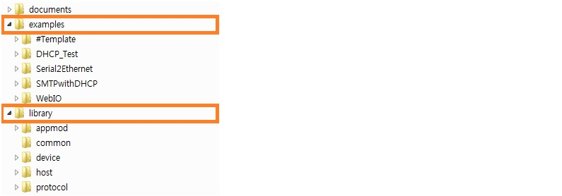

WIZlib 소개
프로젝트 개요
WIZlib 라이브러리는 WIZnet의 TCP/IP칩을 사용하는 Platform에서 보다 쉽고 빠르게 제품을 개발할 수 있도록 하는
개발용 Open Source Framework를 제공하기 위하여 개발되었다. 기존에 제공되던 소스에서는 각각의 Platform별로
코드가 따로 제작되어 배포되었으나, WIZlib 라이브러리에서는 WIZnet에서 판매하는 모든 제품에서 동작이 가능하도록
설계가 진행되고 있고, 현재는 일부 WIZnet TCP/IP칩과 STM32F1xx MCU만 적용되어 있으나 점차 전 제품으로
범위를 넓혀갈 예정이다.
현재 WIZnet TCP/IP칩으로는 W5200과 W5500이 소스 상에 구현되어 있고, Platform으로는 STM32F1xx MCU를
사용하는 W7200, W5200, W5500 Evaluation Board가 소스로 구현되어 있으며, 사용자가 독자로 개발한 Platform을
소스에 추가하여 사용하는 것도 가능하다. 컴파일러로는 IAR사의 EWARM 5.4와 6.2를 지원하며, 다른 컴파일러로
작업하는 것에 대해서도 차후에 업데이트 될 예정이다.
라이브러리 폴더 구성
소스는 크게 documents, examples, library의 3개의 폴더로 구성되어 있다.
- documents 폴더는 사용에 관련된 모든 문서를 한 곳에 모은 것으로 전체 소스 및 개별 모듈에 대한
User Guide, Quick Start 등을 포함한다.
- examples 폴더는 library 폴더의 모듈들을 사용하여 만들어진 예제 프로그램이 들어있다. 각 예제들은
작게는 하나의 모듈 테스트에서 크게는 여러 모듈을 복합적으로 사용한 응용 프로그램 예제까지 구현되어
있으므로, 각 모듈의 동작 테스트와 제품을 사용한 간단한 응용을 바로 실행시켜 보는 것이 가능하다.
그리고 개발의 시작을 편리하게 해주는 Template 프로젝트도 제공한다.
- library 폴더는 WIZlib 라이브러리 프레임워크를 구성하고 있는 본체이다. 개별 하드웨어와 Complier
구성요소 등을 제어할 수 있도록 Abstract Layer를 사용자에게 제공하며, 이를 이용한 상위 모듈을 함께
제공하여 구현하고자하는 프로그램을 보다 쉽고 빠르게 작성할 수 있도록 한다.
examples 폴더 상세
- #Template : 개발 시작용 Empty Project
- DHCP_Test : DHCP의 각 모드를 비교하기 위한 예제
- Serial2Ethernet : WIZnet AT Command를 사용하는 Serial to Ethernet 예제
- SMTPwithDHCP : DHCP와 DNS 등을 함께 사용한 SMTP예제
- WebIO : IO제어가 가능한 웹 서버를 구현한 예제
library 폴더 상세
- appmod : Application Module 모음
- common : 라이브러리 전반에 공통적으로 적용되는 파일들
- device : WIZnet TCP/IP칩 드라이버 등의 파일들
- host : Platform관련 라이브러리와 드라이버 등의 파일들
- protocol : Network Protocol Stack 모음

Getting Started
Basic Usage of Examples
필요한 소프트웨어는 다음과 같고 미리 설치되어 있어야 한다.
Required Software
다음의 절차대로 진행한다.
Project Build
- EWARM을 실행하고 빌드하려는 예제 폴더(examples폴더 안의 폴더) 내안의 프로젝트를 Open한다.
예를 들어, 예제가 #Template이고 Complier가 EWARM 5.4라고 하면, examples/#Template/EWARM54
폴더 내의 프로젝트 파일을 선택.
- 현재 테스트 할려는 Platform에 맞춰 Configuration을 W7200_EVB, W5200_EVB, W5500_EVB 중에서
적절히 선택한 후, Project 탭에서 Build를 클릭하여 컴파일을 시작한다.
- 예제 폴더에 out-(컴파일러)-(Config) 형식의 폴더가 만들어지고 그 안에 Binary 파일이 생성된다.
Binary Download
- 데모 시료를 USART Download 모드로 준비하고, USART 케이블을 PC의 COM Port에 연결한다.
- ST Flash Loader Demonstrator를 실행시켜서 Device와 연결된 COM Port를 선택하고, 컴파일 된
Binary파일을 지정해 준 다음, 다운로드를 시작한다.
- 다운로드가 정상적으로 완료된 것을 확인한 다음 프로그램을 종료한다.
- 터미널 프로그램을 기동시킨 다음 해당 COM Port에 연결하고, 데모 시료를 Program모드에서
Reset시켜 동작시킨다. 터미널 프로그램에서 로그가 제대로 출력되면 성공.
Copyright (C) 2013 WIZnet. All rights reserved.
 1.8.3.1
1.8.3.1